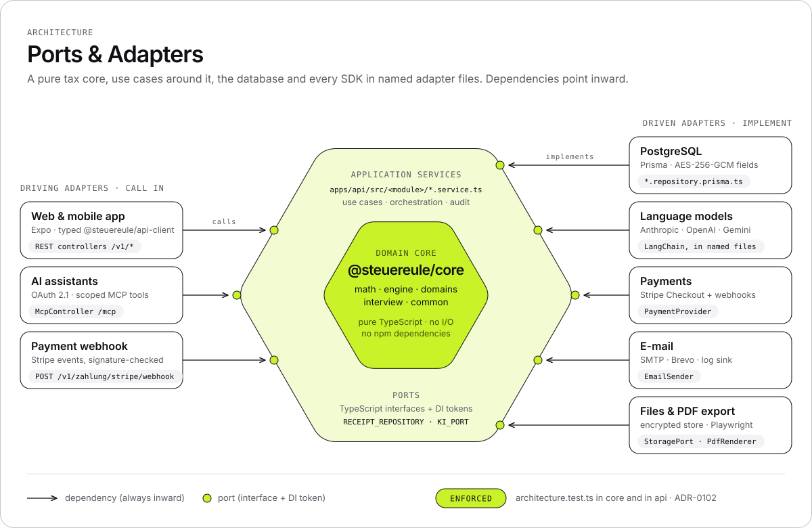

- A pure calculation core. Tax rules are functions without input or output in
packages/core. The API and the web app use the same core, so each rule exists exactly once. - Parameters per tax year. Allowances, lump sums and deadlines are in
math/tax-parameters.ts, the tariff and surcharge tables inmath/tarif.ts. Every year in which a rule changes is named there too (RULE_CHANGE_YEARS, the*_STEPStables, §5.2). A few feature modules still carry their own per-year tables, see §11. - Ports & Adapters around the core. The database and external SDKs are reachable only from named places. §4.1 describes this in detail.
- Draft before entry. Whatever the owl, a receipt reader or an external assistant proposes is a draft with a computed effect. Only confirmation writes (ADR-0066).
- Encryption at the edge of persistence. The Prisma adapter encrypts fields, the storage adapter encrypts receipt files. Services see plaintext and know nothing of the mechanism.
- Official forms as data. 18 forms per tax year (2022 to 2025) are stored unmodified in the repository; their checksums are pinned in
apps/api/src/printout/vordrucke-<year>.json.
4.1 Architecture style: Ports & Adapters

Three rings and one rule: every dependency points inward. The core knows nothing about HTTP, the database or a language model. The application services know the core and ports. An SDK is known only to the file named for it.
4.1.1 The three rings
| Ring | Where | May depend on | Must not depend on |
|---|---|---|---|
| Core | packages/core/src/{math,common,domains,engine,interview} |
itself and node:crypto |
npm packages, apps/* |
| Application | apps/api/src/<module>/: services, guards, parse strategies and the ports (*.repository.ts, common/transaction-runner.ts, llm/single-shot-model.ts, unlock/payment-provider.ts, auth/email-sender.ts) |
core, ports, NestJS | the database client, external SDKs |
| Adapters | driving: *.controller.ts, mcp/; driven: *.prisma.ts, prisma/, the LangChain files in ki/ and llm/, unlock/stripe-payment-provider.ts, auth/smtp-email-sender.ts, account/export/pdf-renderer.playwright.ts, receipt/storage/postgres-bytea-storage.adapter.ts |
ports, core, their own SDK | the SDKs of other adapters |
The Nest modules (*.module.ts) are the composition root. Only there is a port bound to an adapter:
// apps/api/src/receipt/receipt-storage.module.ts
{ provide: STORAGE_PORT, useExisting: PostgresByteaStorageAdapter },
{ provide: RECEIPT_REPOSITORY, useClass: PrismaReceiptRepository },
// a service sees only the interface
constructor(@Inject(RECEIPT_REPOSITORY) private readonly receipts: ReceiptRepository) {}
4.1.2 The main ports
| Capability | Port · DI token | Adapter in production | Stand-in for tests |
|---|---|---|---|
| Persistence per feature module (33 repositories as of 2026-11-22) | e.g. ReceiptRepository · RECEIPT_REPOSITORY |
PrismaReceiptRepository in *.repository.prisma.ts |
apps/api/test/fakes/fake-*.repository.ts |
| A transaction across repositories | TransactionRunner · TRANSACTION_RUNNER |
PrismaTransactionRunner |
passThroughTransactionRunner |
| The owl's advisory turn | AdvisorEnginePort (in the core) · ADVISOR_ENGINE |
LangGraphAdvisorEngine |
FakeKiChatModel, test/fakes/scripted-model.ts |
| A single model call | SingleShotModel · SINGLE_SHOT_MODEL_FACTORY |
llm/langchain-single-shot.adapter.ts |
noSingleShotModel |
| Domain-level AI capabilities | KiPort (in the core) · KI_PORT |
RagKiAdapter |
|
| Payment | PaymentProvider · PAYMENT_PROVIDER |
StripePaymentProvider |
FakeProvider in unlock.service.test.ts |
EmailSender · EMAIL_SENDER |
SmtpEmailSender, BrevoEmailSender |
LoggingEmailSender |
|
| Receipt files | StoragePort · STORAGE_PORT |
PostgresByteaStorageAdapter |
the in-memory adapter of the receipt tests |
| PDF of the GDPR export | PdfRenderer · PDF_RENDERER |
PlaywrightPdfRenderer |
|
| Checking assistant tokens | BearerTokenRepository · BEARER_TOKEN_REPOSITORY |
PrismaBearerTokenRepository |
a fake in the guard test |
| The tax case of a person and year, for the seven services that compute on a return (estimate, printout, Cockpit, Abgabe, Verlauf, Bescheid, Veranlagungsvergleich) | TaxCaseReader · TAX_CASE_READER (tax-case/) |
RepositoryTaxCaseReader |
taxCaseReaderOver({ … }) over the fake repositories |
| The estimate, for modules the estimate itself reads | HouseholdEstimate · HOUSEHOLD_ESTIMATE (owned by capital/), PrintoutEstimate · PRINTOUT_ESTIMATE (owned by printout/) |
TaxEstimateService, bound by the global TaxEstimatePortsModule that only AppModule imports |
the service over fakes, or a stub |
4.1.3 What is checked
| Invariant | Test | How it proves that it can fail |
|---|---|---|
The database client and eleven further SDK groups are imported only by the files named for them. That includes src/prisma/** and adapter classes in *.prisma.ts. No file imports ModuleRef from @nestjs/core (no service locator); Reflector and NestFactory stay allowed. |
apps/api/test/architecture.test.ts |
fourteen constructed violations in the test, two of them imports of ModuleRef (named and namespace); each must yield exactly one finding |
| A named exception that no longer imports its SDK is an error. | the same test | found one superfluous exception on its first run |
The set of module → module imports in apps/api/src equals the baseline (334 edges between 53 folders as of 2026-11-23, after ADR-0106 removed auth → config; 352 between 50 on 2026-11-22). |
the same test, baseline apps/api/test/architecture-module-edges.json |
a difference in either direction fails |
The modules of apps/api/src on an import cycle are exactly the 28 listed in MODULES_ON_A_CYCLE (one strongly connected group as of 2026-11-25); none may join it. account and personal-data are on no cycle; personal-data (the personal-data registry, legal holds, the erasure flag) imports only common and prisma. |
the same test | a constructed three-module cycle must be found, a chain must not |
In the core: math imports nothing, common only math, engine never interview; no new direction between the folders. |
packages/core/src/architecture.test.ts |
broken with probe files on 2026-11-22 (ADR-0102) |
| In the core: the files importing against the intended order are exactly the 23 known ones. | the same test | as above |
| In the core: no cycle of value imports between files. | the same test | as above |
| The core has no npm dependency. | pnpm does not resolve undeclared packages; pnpm -r typecheck |
packages/core/package.json has no dependencies |
Both tests run in the CI job test of the workflow Quality.
4.1.4 Known limits
- LangChain is in nine files, not behind a port. The agent loop every model agent runs on is
llm/agent/agent-loop.ts. The owl's advisory turn is written in LangChain types: prompt assembly (ki/advisor-prompt.ts), the tool round (ki/advisor-tool-round.ts,ki/advisor-tools.ts) and the tool context (ki/tools/tool-call-context.ts). Changing the framework would mean rewriting those files. Changing the provider is configuration. mcp/loads LangChain too, because it importsTOOL_ARG_SCHEMASfromki/advisor-tools.ts.pdf-libhas no port. Onlyprintout/form-renderer.tsimports it, but services callrenderFormsdirectly.- better-auth is confined to two modules, not one file. Twelve files in
auth/anddevice/use it, among them the guard for JWT verification. - Modules are still coupled. 334 edges; 3 pairs of modules import each other (2026-11-23, down from 16 on 2026-11-22). The ratchet prevents growth; removing an edge means rewriting the baseline (§11, finding 4).
- The core has two folder-level cycles, see §5.2.
- DI tokens are not type-checked. A missing binding fails at start-up, a wrong one only in an integration test.
- Imports are found by pattern. An import path computed at runtime is invisible.
4.1.5 Recipe: connecting an external dependency
- Port in the module that needs it: interface, DI token, result types. No SDK import. The types belong to the port.
- Adapter in a file of its own. For Prisma the suffix
.prisma.tsis mandatory. - Table in
apps/api/test/architecture.test.ts: add the SDK and the adapter file, plus one constructed violation. - Binding in the
*.module.ts:{ provide: FOO_PORT, useClass: TechFooAdapter }. - Fake under
apps/api/test/fakes/for unit tests; an integration test covers the real adapter.
4.1.6 Trade-offs
| Gain | Cost |
|---|---|
| The core is testable without infrastructure: 2067 tests in 155 files run without a database (as of 2026-11-22). | Four artefacts per external dependency: interface, token, adapter, fake. |
| Three model providers and a fake for CI behind one factory. | One indirection when reading: what stands behind RECEIPT_REPOSITORY is stated only in the module. |
| Field encryption sits in the Prisma adapter; services do not see it. | The compiler does not check DI tokens. |
| A violation costs a red test run instead of an architecture review. | Exception lists and the edge baseline have to be maintained. |